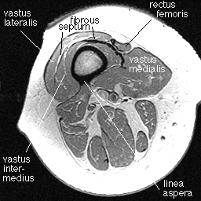
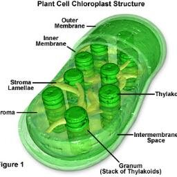
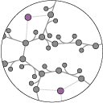
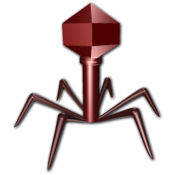

One of the oldest fields of science, anatomy can be traced back thousands of years to ancient Egypt. Anatomy is the branch of biology concerned with the study of the structure of organisms and their parts. It is how the pieces of a living organism fit together. Click for a guided tour of human anatomy and physiology

Botany:
With its roots dating back 10,000 years with plant lore, Botany as a science really began to rise in the 17th century. Botany is the study and understanding of plant organisms and their structures. Botanists help us to appreciate the relationship between plants an animals, medical usage of plants, and how plants can help us live better lives. Click to read more about botany and plant hormones

Computational Biology:
Computational biology involves the development and application of data-analytical and theoretical methods, mathematical modeling and computational simulation techniques to the study of biological, behavioral, and social systems. This field is changing the way some biologists think about data. Click for more about computational biology

Microbiology:
This is the field of biology concerned with understanding microoganisms such as cells, genes, viruses, and bacteria. Microbiology is used as a right hand to medical science and fighting diseases. This field also deals with modifying and mapping genetic code. Click for more info on gene modification research

Mycology:
Mycology is the scientific study of fungi, such as mushrooms. This less talked about field also lends a hand to medicine as well as interesting solutions to modern problems. One example is that use of mushrooms to clear out radiated ares from nuclear spillout. Click to read more about mushrooms and radiation